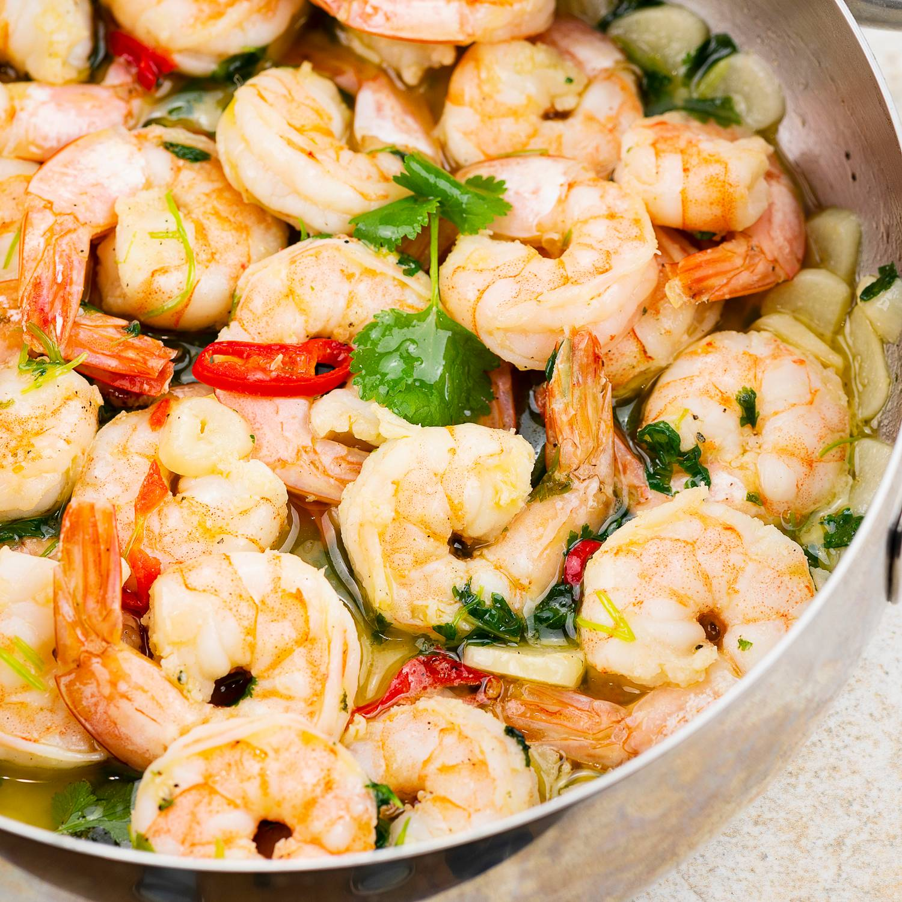
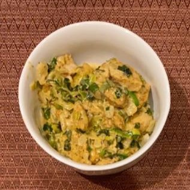
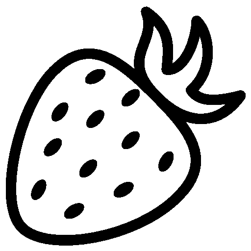

06 maja 2023
Wszystkie piwa gotowe!
Wszystkie piwa na imprezę są już gotowe. Czy spróbujesz truskawkowego kwasu Fragølsted? Chcesz posmakować Australii pijąc Całusa Smak, chmielony chmielem Galaxy? Poczułeś w sobie Brytyjczyka, który musi napić się herbaty, a przynajmniej piwa z herbatą?
Wydaje mi się, że jestem bliski stworzenia systemu dodawania dojazdów, jedzenia oraz zgłąszania zapotrzebowania na noclegi. W rozpisce dadam też opcje dojazdu komunikacją publiczną.
8 kwietnia 2023
Witajcie na mojej imprezie!
Cześć! zapraszam Was wszystkich na imprezę, która odbędzie się 20 maja w Sięganowie. Aby dotrzeć do mnie, należy wjechać w Sięganów Osiedle, a następnie skręcić w drugą drogę w lewo.
Ponieważ impreza będzie zbierała wiele osób o różnych potrzebach dietetycznych, postanowiłem skupić się na tylko podstawowych potrzeb wszystkich gości - warząc dla Was piwo! Z tego powodu chciałbym, aby w razie możliwości goście przynieśli też napoje oraz jedzenie. Informacje dotyczące wyżywienia znajduję się w
odpowiednim miejscu tej strony.
W razie potrzeby zrobię wszystko, by zapewnić potrzebującym nocleg. Jeżeli liczba chętnych przekroczy pojemność dostępnych łóżek, skazani będziemy niestety na rozwiązanie śpiworowe.
Listę piw, któe zamierzam uwarzyć znajdziecie w
ostatniej sekcji tej strony.
Dojazd
W tej sekcji będą pojawiały się informacje dotyczące możliwości dojazdu na koniec świata zwany Sięganowem. Nowe informacje będą się pojawiały od najstarszej do najnowszej, w przeciwieństwie do newsów.
W ogólności do Łasku dojechać można pociągiem z Poznania, Łodzi, Warszawy, a w ektremalnych przypadkach nawet ze Szczecina.
Historia tego połączenia kolejowego jest bardzo ciekawa. W 1862 r. na terenie Prus powstał Komitet Budowy Kolei Żelaznych z Wrocławia do Warszawy...
Po dotarciu do Łasku postaram się ogarnąć transport dla osób potrzebujących. Z doświadczenia wiem, że wiele osób przyjedzie samochodem z Warszawy, a jedna osoba przyjedzie zapewne z Opola.
W planach jest zamieszczenie na tej stronie systemu umawiania się na wspólne dojazdy.
Noclegi
Jeśli warunki na to pozwolę, będę starał się Was wszystkich przenocować. W razie zbyt licznej grupy przyjezdych, konieczne będzie zastosowanie opcji śpiworowych.
Jeśli mi się uda, stworzę system zapisywania się na spanko.
Jedzenie i napoje
Jeżeli po zdrowej dawce zdrowego chmielu, albo, co bardziej zalecane, przed tą dawką, zapragniecie zjeść, konieczne będzie zaopatrzenie się w żarełko. Możliwe jest zamówienie pizzy z Łasku (
vide Wenecja oraz
Grande Pizza)
Możliwe i pożądane jest także przyniesie własnego jedzenia oraz napojów. Niedługo stworzę system deklarowania przynoszonego jedzonka!

Krewetki zajebistości
Kurcharz: Michał Kwiatek
Ilość: dwie osoby
Przepis: filmik na YT

Sos porowy
Kurcharz: Moinika Marcinkowska
Ilość: cztery osoby
Przepis: tajne przez poufne
Piwa
Poniżej przedstawiam piwa, które będą pieścić Wasze spragnione podniebienia na imprezie.
Nazwa: Bowling ball
Styl: Earl Grey APA
Ekstrakt: Około 12 BLG
Moc: Około 5%
Składniki: Słód pilzneński, chmiel Iunga, chmiel Chinook, Herbata Earl Grey

Nazwa: Fragølsted
Styl: Strawberry sour ale
Ekstrakt: Około 12 BLG
Moc: Około 5%
Składniki: Słód pilzneński, chmiel Iunga, chmiel Chinook, truskawki
Nazwa: Całusa smak
Styl: Australian pale ale
Ekstrakt: 16.5 BLG
Moc: 7.1%
Składniki: Słód pilzneński, chmiel Galaxy, Voss Kveik